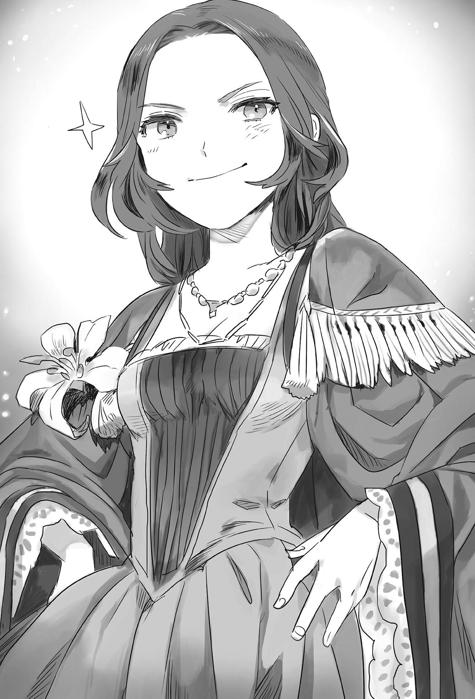

Chapter 3 – The Dream of Beastman Race
.
Part 1
Two months had quickly passed since Maggot’s confession.
There was a mountain of things that Baldr had to do before he could announce that he was the main heir of Trystovy Kingdom.
If he simply announced 「I’m the son of Princess Marguerite」, he would only end up getting used by others for all his worth.
Maggot decided to be stronger than anyone else was for the sake of protecting her irreplaceable family.
However a strength that was dozens of times greater than that was needed in order to force the society to follow one’s own will.
At the very least Baldr’s strength as the new margrave of Antrim was insufficient.
For Mauricia Kingdom, the political influence of Baldr who had just become the new hero wasn’t small by any means, however his presence in the palace was still below the ten great nobles.
「There won’t be taking it back anymore once I announced myself. First I need strength that can make the king unable to interfere.」
If one decided to fight then they had to win. To win strength was needed.
Recently Baldr was starting to think of Welkin with the term of king instead of his majesty. It was unknown whether he was doing it consciously or unconsciously.
.
「──Baldr-sama, a messenger from Sanjuan has arrived.」
「I’ll meet him right away.」
Among the retainers now, only Tyros was able to call Margrave Baldr with his name.
Even Baldr’s former classmate Brooks had stopped calling Baldr with his name since he became the knight commander of the margrave house.
To be honest, people like Agatha or Brandon weren’t pleased of the way Tyros was addressing Baldr, but Tyros was a capable all-purpose retainer who was fully devoted to Baldr twenty-four seven, so something like this could simply be considered as a small flaw of his.
「──Ooh! You’re looking well Baldr!」
「Wait, why are you here Teresa!?」
The person who he thought as the messenger was a very familiar woman. It made Baldr pulled at his hair and screamed.
She was his childhood friend who now had become the crown princess of Sanjuan Kingdom as the wife of the kingdom’s regent Franco.
Her red hair that was cut short in the past had grown until her shoulder. The features of her face looked mature now. If she dressed like a man with her current appearance, anybody would immediately realize that she was a woman.
Perhaps because she had obtained a spouse now, the growth of her chest and waist was also striking.
However she should be busy everyday as the next queen because of King Carlos’s critical condition. So how was she able to come to Antrim?
No, before thinking about that, could it be that this person actually didn’t understand just how important her status right now? Baldr was driven by a desire to interrogate Teresa for nearly an hour.
As a matter of fact Teresa was practically the queen right now because Franco currently was in control of the country.
「Just the other day, the prototype ship that was made using the technology that Baldr taught us had finished its voyage and returned, but the foreign medicine it brought back was unexpectedly effective. His majesty too has now gotten out from his critical condition.」
The ship that had just returned was the first prototype ship that set sail to the South Seas with the compass and preserved foods loaded into it.
Unfortunately the ship couldn’t discover new continent, but it discovered a large island that had total length of several dozen kilometers and the crews succeeded in interacting with the inhabitants there before returning home the other day.
It seemed that one of the souvenirs was a medicine that managed to suppress Carlos’s sickness from progressing.
「Baldr is a benefactor of Sanjuan Kingdom, but now you have also become a benefactor who indirectly saved his majesty. It’s simply courtesy for one of the royal family to directly visit you isn’t it?」
Teresa smugly chuckled ‘fufuh’ with her chest puffed up with pride. That gesture undoubtedly belonged to the childhood friend that Baldr knew well.

Baldr didn’t show at his face that he was feeling happy to see that somewhere in his heart. He shrugged with an exasperated expression.
「Even though I thought that you had become slightly like a crown princess.」
「You yourself has changed a lot Baldr. Really, you are a man without even an ounce of true friendship in you.」
Even from Teresa’s eyes, it was apparent that Baldr had grown drastically from his appearance and bearing.
Baldr had surmounted the borderline between life and death in the war and even won against the personification of the strongest warrior that was his mother Maggot. Now it felt like there was an unshakeable huge core within his body.
It felt like Baldr had left her behind to become an adult. Teresa was vexed by that.
「Well, let’s put that aside and get into the heart of the matter──」
Teresa changed the topic with an air that would make other feel pressured. It was an atmosphere that was unlike the usual lively Teresa.
「……Is the story that you are the son of Princess Marguerite and now you are aiming for the throne of Trystovy true?」
After she asked that, Teresa frowned and shook her head because she had messed up.
「──No, I just asked you something trivial. There is no way that Baldr will say something like that as a joke.」
A secret message from Baldr reached Teresa and Franco just the other day.
It said that Maggot was actually Princess Marguerite.
It also mentioned how there was a beastman blood flowing inside him even though it was thin.
Baldr was the first heir to the throne, while his little brother Nigel was second in line after him.
Maggot was once attacked by assassins from Mauricia Kingdom in the past.
He had no intention to keep this secret buried and lived a peaceful life.
Reading that massage made Teresa came to an acceptance. The message was filled with the words of man who intended to cut open his own path. It was really like the childhood friend that Teresa was proud of for him to choose such path.
This was a gamble for Baldr, but it was impossible for him to draw out concession from Welkin and won the war against Trystovy Dukedom without Sanjuan Kingdom’s support. Baldr had quietly resolved himself, that If he got abandoned by Teresa and Franco, then in the end he was just a man of that level.
When Teresa read the letter for the first time, she was feeling a terrible indignation because her best friend was hiding something this big.
「First let me say my personal opinion……you are really stand-offish Baldr, you are insulting me if you think that my friendship will be broken just from this much!」
It was unfortunate instead that Baldr didn’t have animal ears on him. Teresa declared with a rough breathing.
No, ears doesn’t play any part here, Baldr thought, but his heart was naturally feeling warm toward his friend’s unchanging friendship.
「Speaking about animal ears make me remember. Is Miss Selina not here? I’ll proof my full acceptance of beastman while showing my admiration to those ears.」
「Sorry but I have no intention to allow my fiancées to come within two meters near you.」
This didn’t mean that Teresa’s ardent love to Franco had cooled down, but it seemed that this vice of hers hadn’t been cured.
「Flower exist to be admired. My love to Franco won’t cool down just from that.」
「I’ll ask Franco-dono later whether he also agree with that opinion or not.」
It seemed Teresa finally calmed down after exchanging that silly joke. She cleared her throat and continued with the important matter.
「Let me speak from the conclusion, it’s impossible for our country to desert you Baldr at this point.」
For Sanjuan Kingdom, Baldr’s existence wasn’t simply a hero that saved the country from a national crisis.
He was also the planner for a new navigation technology, the best friend of the crown princess, and also someone loved by Urraca who was in control of the navy of their allied country Majorca.
Baldr was someone that they absolutely didn’t want to turn into enemy just because of those reasons, but in addition Sanjuan Kingdom had also signed a capital alliance with Dowding Company and right now there was a large project was in the middle of being worked.
First was the cultivation of pearl.
Akoya oyster was mainly used at Japan, while at Australia they mainly used silver-lipped pearl oyster. Aquaculture experiment using these two pearls had already been started in a large scale.
The accumulation of the mother-of-pearl had already been confirmed. For Akoya oyster that had fast breeding, it was assumed that next month the harvest could start.
Silver-lipped pearl oyster had long breeding period that reached two years. Its harvest would start from next year, but in exchange they could expect large pearls from it. Right now the kingdom and Dowding Company were busily counting on their abacus to calculate how much profit this venture would bring them.
Of course the quality of cultured pearl couldn’t rival natural pearl, but they were planning to market this pearl among the wealthy commoners and the middle class nobles as luxury item. The scale of the market should be bigger compared to having only upper class nobles as customers.
This was a feat that couldn’t possibly be done by Mauricia Kingdom no matter how hard they tried because they didn’t have any sea in their territory.
A contract had been signed that if this venture succeeded, Baldr would receive three percent from the transactions amount as someone who provided the knowledge.
Depending on the production amount from here on, a vast amount of riches would flow into Baldr’s pocket.
And then the other project was the adoption of downward flow style saltpan.
The formation of saltpan was relatively slow. In Japan it was thought that such method was done after the Warring States period.
Before that, the people of Japan obtained salt by drying seaweed that was submerged in seawater, burned it, then melted the ash into water and then filtering the water with cloth, or boiling down seawater directly.
The song of the famous Fujiwara no Teika in the one hundred famous poems 「Waiting for someone who won’t come at the seashore at evening, even the body of salt from the burning seaweed is also in yearning」 was singing about this method of creating salt.
After that artificially flooded salt farm above the high-tide mark and naturally flooded salt farm below the high-tide mark got popularized. The famous Akou salt from The 47 Ronin was created using the naturally flooded salt farm below the high-tide mark.
In both types of salt farm, watertight layer had to be created using material like clay so that the seawater wouldn’t get away. Then fine grain of sand would be spread all over the surface, then after the sand was permeated with enough salt content, the sand would be boiled down to take out the salt crystal.
In case of naturally flooded salt farm below the high-tide mark, it would make use of the tide’s rise and fall. This way would save the time for sprinkling sand on the seawater, so the production area could be enlarged.
Sanjuan Kingdom was using this naturally flooded salt farm below the high-tide mark. It wasn’t just Sanjuan Kingdom, all the countries that faced the sea in this Aurelia continent was adopting the same method to obtain salt.
Compared to this, the downward flow style saltpan didn’t make use of sand that needed a lot of time and effort. This saltpan used concrete or vinyl to form watertight long slope, then by exposing the seawater to sunlight and wind, the salt content’s thickness would be heightened.
Furthermore by making the seawater dripped down through bamboos or the like that were piled on rafter by many layers like a broom, it was possible to make the salt content of the seawater to become extremely thick.
Using this method, production output that was three until five times greater than the traditional naturally flooded salt farm below the high-tide mark became possible. Conversely the manpower needed became a tenth of the traditional method.
This technology was categorized as secret information at strategic level. It was known by limited amount of people even within Sanjuan Kingdom.
A total of three downward flow style saltpans had finally started operating not long ago. The plan was to provide cheap salt to the whole continent through Dowding Company in the future.
Salt was a strategic resource that was indispensable for human. If Sanjuan Kingdom could snatch the market share using cheap salt, it might become possible for Sanjuan Kingdom to ruin a hostile nation in the future by simply stopping the salt supply.
As a matter of fact, creating salt was an even harder work than farming work.
Just like how spinning jenny caused the price of raw thread to crash in Britain, if Sanjuan Kingdom’s salt caused the price of salt to crash, it wouldn’t be strange for the salt making industry of many countries to be devastated.
There was no way Sanjuan Kingdom could desert Baldr after getting this heavily indebted to him.
At the same time, it could also be said that it was far more terrifying for Sanjuan Kingdom to turn a single Baldr into enemy rather than turning Mauricia Kingdom into enemy.
「……Besides I think you know this already but, Trystovy is a historical enemy nation for our Sanjuan Kingdom. We are going to wholeheartedly cheer if the one who become its new ruler is Baldr.」
Sanjuan Kingdom and Trystovy Kingdom had been in conflicts with each other for many generations to contest the control of the South Seas.
Trystovy Kingdom employed the private mercenary of maritime guild (Sanpaniradeon), while Sanjuan Kingdom had a powerful allied country that was Majorca Kingdom. The forces of both sides were in rivalry with each other.
However Trystovy navy and maritime guild split from each other due to the civil war. In the recent years, the control of South Seas was gradually shifting to the advantage of Sanjuan Kingdom.
It would become problematic if Answerer Kingdom turned Trystovy Dukedom into their vassal state.
Answerer Kingdom boasted the biggest population and capital strength in the whole continent. If they seriously put effort into rebuilding Trystovy Dukedom’s navy, the current advantage of Sanjuan Kingdom would be immediately blown away.
In that respect, Baldr becoming the ruler of Trystovy would be a welcome news for Sanjuan Kingdom.
And then if in the future the navies of Sanjuan Kingdom, Majorca Kingdom, and Trystovy got united, there would be no more need to fear any other maritime force no matter who it was.
「──Even if it means someone with beastman blood inside him will become a king?」
Baldr stepped into the heart of the matter.
Currently there was no country in this continent that ever had a beastman as king.
Especially for Answerer Kingdom, Mauricia Kingdom, Sanjuan Kingdom, Trystovy Kingdom, and Nordland Empire that descended from the unification dynasty. They had the tacit understanding to protect that pedigree.
In the end, how many people would still follow Baldr even knowing that he had beastman blood flowing inside him?
Even Baldr’s birthplace Mauricia Kingdom undoubtedly held quite a number of nobles that would harbor prejudice toward him.
「I learned this from marrying into Sanjuan Kingdom. Our country is a land that opened to sea. In short our country is used to accept outsider.」
Unlike farmers that spent their whole life doing nothing but cultivating the same land over and over, the people of the sea wouldn’t settle down in one place.
Sanjuan Kingdom was preserved not through agriculture but by manufacturing and trade. Most likely this country was one of the most accepting countries in the continent.
「Trystovy is also a maritime nation. I think that at the very least it also has similar disposition with Sanjuan you know?」
Though I don’t know how it will be in Mauricia, Teresa said with a dry laugh. She was a bit amused by herself who had become a woman of Sanjuan Kingdom before she noticed it.
「Be a bit more confident with yourself. Compared to winning against Haurelia with just Antrim’s force, subduing Trystovy that is exhausted from civil war won’t offer you any challenge.」
Baldr smiled wryly at Teresa’s blunt irrational argument.
Certainly Baldr could only be Baldr no matter how much he racked his brain.
「Our country recognize Baldr as the legitimate ruler of Trystovy. We will prepare to tie an alliance with Trystovy Kingdom that has Baldr as its leader. Those are his majesty Carlos’s words.」
.
Part 2
「Good grief, there is nothing but troubles.」
Jack Armadio Trystovy narrowed his already thin eye-slit to be even thinner and reached out toward his favorite Tuscany wine.
He fully enjoyed the mellow fragrant that reached his nose even without taking a sip before he poured the whole glass into his throat even though it was slightly against the manner. Then Jack let out a loud sigh.
Jack celebrated his 70 th birthday this year. He was the archduke who ruled Antonio territory at the east part of Trystovy Kingdom in the past.
After that he killed his biological big brother Umberto and ascended to the seat of Trystovy’s supreme leader. His journey until now wasn’t uneventful by any means.
Rather Jack would sometimes think that he would be far more at ease if he stayed as a mere noble instead of becoming the king.
When the pillar that was the king fell, he managed to control the foolish nobles who laid their greed bare and secured the funds that were going to be taken away by the escaping merchants solely thanks to the capability of the man before him.
「──And, do you think that Princess Marguerite will be found, Count Ost?」
Valerie lightly considered Jack’s question before he shook his head.
「The possibility of that is small. Even without us searching for her, she would have showed herself if she has the wish for it. After all there have been many chances for that until now.」
「True.」
Well, even if she was found, she would only be killed later at the appropriate time using any suitable excuse.
Jack didn’t harbor even the slightest delusion that his position was build above a rock-solid foundation.
The number of schemes and betrayals that he had experienced during these ten years was innumerable.
Killing the king was a taboo that destroyed the morality.
Jack had never been liberated from the fear that next time it might be himself who got killed.
「Although the time remaining won’t be long. We can’t discount the possibility of Mauricia running out of patience and preparing a fake.」
「They can’t even control the royalist faction, so what can they possibly do?」
Royalist faction that was centered around Marquis Randolph was greatly shaken at the foundation because of the news of Princess Marguerite’s survival and Bernardi’s proposal──to marry Silk and return the old territory of the fleeing nobles.
There were even some idiots among them who insisted that Silk should marry with Bernardi. He heard that it infuriated Alford and he kicked out those idiots with them only able to bring the clothes they happened to wear.
It had been more than ten years since those nobles in asylum had fled from their homeland. They didn’t want to end their life in exile like now. Because of that they started moving independently based on their own interests.
There were even some of them that sounded out the possibility of colluding with the dukedom.
Considering that, Jack thought that there was no need to fear Mauricia Kingdom as long as things didn’t devolve into an all-out war.
「The problem is Answerer Kingdom’s movement. After all it will be unbearable if we are turned into vassal state like Nedras Kingdom or Grand Duchy Tenedora.」
Originally he wanted to unite Trystovy by subduing each force with his own power without crossing a dangerous bridge like this.
However Jack was getting conscious of his own shortening lifespan due to his old age. He wanted to achieve the unification of Trystovy somehow while his life was still holding on.
After shouldering the stigma of killing his own brother and usurping the country, he wanted to avoid leaving this world while still leaving behind many troubles untouched.
He resented his own powerlessness that he had to borrow Answerer Kingdom’s strength even knowing the danger, but he also couldn’t imagine that his son Bernardi would be able to shoulder this heavy burden.
For good or bad, Bernardi was a mediocre man who wasn’t used to bloodshed.
「Answerer Kingdom can’t even suppress the insurgent at Nedras Kingdom, so how can they possibly act as they please in Trystovy. Of course, this will be the case only if there is no traitor among us.」
「Umu, it’s just as you say Count Ost.」
Currently Answerer Kingdom was observing Mauricia Kingdom’s approach to this matter.
The proof of that was how Answerer Kingdom’s support to Trystovy stopped with material aid like warships and the like.
Answerer Kingdom had the military strength to occupy Trystovy if they felt like it, but they didn’t have the strength to continuously rule over the country, nor did they have any good justification to do so.
Although it would be a different story if a force of some size turned traitor and sold the country out.
Just like how Jack defeated his brother Umberto, there must be other people who thought of defeating Jack and became the ruler of Trystovy. That was what Jack thought.
「Cappelloni and Delmilio are no good then. Marquis Randolph has taken hold of their purse. They will attack if there is opening.」
「You still have ears everywhere just like usual.」
Putting aside Count Cappelloni, the monetary situation of Viscount Delmilio was unknown even to Jack the king of this country.
Jack felt a chill once more at Valerie’s connection and immeasurable political strength. He had to avoid turning this man into enemy no matter what.
Jack didn’t hold any doubt to Valerie’s loyalty even though he was feeling an indescribable threat from him.
The reason was because Valerie was appointed by the late King Umbert to an important post. It was impossible for Jack to win without Valerie’s cooperation.
So to speak Valerie was Jack’s lifesaver.
Furthermore Valerie never asked for any wealth or rank even after all his contributions. He simply worked hard stoically because he was worried about the future of the country. Jack was harboring such slightly convenient faith toward Valerie.
This man desperately worked hard for him even without him giving any compensation. There was nobody better than this man as his subordinate.
Although Valerie’s motive was actually the complete opposite from Jack’s expectation.
Actually Valerie was one of the Seven Elders of the maritime guild, Bennett Garibaldi. He had led a double life for more than ten years. He was controlling the antagonism between the maritime guild and Trystovy Dukedom from behind the scene. This fact was something that Jack never even imagined in his dream.
Valerie had been maintaining a well-balanced antagonism of both sides while also planting hatred to both sides.
And yet Valerie continued to leak information to both sides to continue controlling the civil war so that no hope for ending the war could be seen and feeling of war-weariness was spreading far and wide.
──He was laying the foundation so that one day a hero would appear and solve everything.
Valerie thought that first it was necessary to make everybody grew weary of war in order for all of them to be able to accept the hero regardless of their interests.
「I want to settle this dispute with them for sure this time.」
Jack unconsciously clenched his fists tightly.
He always wished for the same thing during this long war, but this time only there was an absolute limitation to the time.
If the war dragged on, one day Answerer Kingdom would push their princess to become Bernardi’s marriage partner, then this country would gradually become a vassal state of Answerer Kingdom starting from the generation of their child.
It was Answerer Kingdom’s forte to usurp a country with marriage.
Actually Bernardi’s marriage proposal to Silk was also for reining in Answerer Kingdom.
It could also be used as excuse for Answerer Kingdom. If the dukedom took a wife from other country too easily, then the royalist faction that had finally started to soften might get angered again. The dukedom could use such excuse if Answerer tried to bring up the matter of marrying their princess.
Regardless of the reality, Jack wanted to accomplish the unification of Trystovy while they still had time.
Trystovy, Mauricia, Answerer. All of them were moving for the sake of their own interests.
But even among all those, Valerie was the one who harbored the most ambitious intention.
「I don’t want to be indebted to Answerer Kingdom, but first we have to win at the sea. If we can snatch the control of the sea from the maritime guild, they won’t be any different from a fish that is stranded on land.」
(Hmph, I won’t let you win that easily though.)
The elites of maritime guild displayed their true worth only when they were allowed to carry out guerilla warfare in small scale.
They wouldn’t need to fight head-on. It was possible for them to face their enemy in equal footing if Valerie just leaked information to them.
Valerie himself would also be troubled if the unification of Trystovy was finished quickly by the archduke faction.
(Foolish man. The likes of you don’t have the strength to create the future of this country!)
In the end Jack was nothing more than a figurehead that Valerie raised in order to crush the unshakeable emotional pillar of this country which was the king’s authority.
With the murder of the king, the authority that Trystovy could unconditionally obey had crumbled and this country was turned into a lawless world where anyone could rise by overthrowing their superiors.
In order to welcome a new hero, Trystovy royal family that inherited the bloodline of the unification dynasty was nothing but a hindrance.
.
Part 3
「Uwaaaa~~~~~! Cold cold cold-!」
Augusto who was used to live in Mulberry that was located at the southern part of the continent was nonplussed by the coldness of Nordland that was biting into his body.
He had stayed here in Nordland for several years when he was a kid, but Augusto had gotten used to the warm climate of southern country and this place had become too harsh for him.
Although only the person himself knew whether he was really thinking that or not.
After all Augusto was burying his face into the breasts of his mistress who was accompanying him. His hands were snaking around her waist and he got intoxicated with the warmth of human skin.
「Young master, buy me a warm cloak okay?」
「It’s a cheap request if it’s for your sake.」
Garibaldi Company’s financial strength wasn’t so brittle that it would be shaken just from buying clothes for a mistress. Rather using money proactively would be better for the economy with the money moving around from one place to the next.
Wasting money for the sake of his favorite mistress was one of Augusto’s hobby.
「Even so, I never even thought that young master is actually a Nordlander.」
「Even though I have these ears?」
「Young master, you said that it’s only because the blood of your mother is showing out.」
「She married with my father. Even my mother was somebody with quite a high status.」
In fact, Augusto’s mother came from Mannerheim House, a famous military family in Nordland.
Augusto recalled his memory when he was taken home by his mother and spent his childhood here. He immersed himself in nostalgia briefly.
He purely missed his younger days when there wasn’t any obligations tying him down.
Augusto was undoubtedly the fourth son of Valerie, but he wasn’t acknowledged as a legitimate child of Ost House.
He was only considered as the eldest son of the merchant Bennett Garibaldi in the end, and he was effectively the one operating Garibaldi Company.
Augusto was actually thankful for such position, but there was certainly a part of himself who harbored a longing to the warmth of ordinary family.
For him Nordland was one of the few tranquil lands that allowed him to recall such familial warmth.
「Geez~~! Don’t just look at Catherine, look at me too!」
A pretty girl with baby face and red hair that was tied in sidetail style was letting out her complaint. The way she puffed out her cheeks in her bad mood looked similar with an adorable small animal.
「It can’t be helped right? I can’t bury my face into breasts like this with Laura.」
「Mumumu! Even I can do something like that! ……It won’t be as soft though.」
Laura’s height was about 140 centimeters or perhaps even shorter than that. Her sexiness couldn’t possibly rival Catherine.
Even so she did her best to try seducing Augusto. She exposed her skin and rubbed her body on him, but Augusto kissed Laura’s neck with a composed expression and patted her head as though he was humoring a child.
「Don’t force yourself to get cold like that. Laura too will be a true lady in three more years.」
While Catherine was Augusto’s mistress, Laura was actually his secretary.
Despite her childish appearance, she was born with memorizing ability that couldn’t possibly be copied by adult no matter how hard they might try.
She made use of her talent to manage Augusto’s schedule, but the person herself only wished to be counted as his mistress quickly rather than simply being his secretary.
「Buu, you are treating me like a child again……」
「What are you saying, you are a child.」
「Shut up Catherine, you’re annoying!」
Augusto was self-aware that he was a lecherous man, but as expected he didn’t have a special taste where he craved to devour a little girl whose period hadn’t arrived yet.
Augusto loved talent just like his father Valerie. However his sexual preference was relatively normal with his love for sexy body and huge breasts.
「Laura will surely grow to be a beauty.」
Augusto smiled wryly and kissed Laura’s lips that were like a small flower bud.
「Funyuu……」
Laura’s eyes moistened from the surprise attack. He accepted Augusto’s lips in intoxication.
Perhaps this man was an enemy of woman of a different type from Baldr.
.
「──The carriage over there, stop!」
The tense voice of a young woman resounded clearly at that timing.
Augustos changed his expression as the representative of Garibaldi Company and covered Catherine and Laura behind him.
Having assassins sent after him by rival company or the archduke faction when he went outside the country wasn’t something that had happened just once or twice to him.
His skill that was trained by his uncle hadn’t withered even now. Against the average bandits, Augusto had the strength to easily handle five or six of them.
Augusto opened the window that was the size of a human head and searched for the owner of the voice.
「……Could it be……Angelica?」
There Augusto found the figure of his little sister figure whose age was apart from him. She got attached to him when he lived in Nordland at the past.
「It’s Augusto-niisama just as I thought! You’re horrible! You hadn’t showed yourself here for ten years.」
It seemed this cousin had heard about his arrival beforehand and spurred her horse right away to pick him up here.
「Good grief, so you’re still a tomboy even after growing up.」
It looked like she had grown up to a figure that was suited to his liking, but Augusto didn’t say that out loud and he only smiled suggestively.
.
Part 4
Nordland’s capital Madison(マジソン) was a fortress city that had huge ramparts surrounding the city.
Its defensive capability wasn’t inferior at all compared to Mauricia’s capital Cameron that was surrounded by water.
The first Emperor Ivan I who wanted to reign supreme over the continent one day was the one who started the construction of this city. This city was then finally completed at the generation of the third emperor Eric I.
「Welcome home! Nii-sama!」
Augusto showed his promissory note at the enormous gate where one had to look up to see the top. After he finished the procedure, Angelica who was riding her horse in parallel with the carriage smiled happily at him.
After passing through the gate, there was the bronze statue of Ivan I and the beastman Bowdwitt who was said to be the one supporting the emperor turning their glaring gazes to the east.
A huge fountain and pond with colorful park were put at the surrounding. Children were running around energetically with innocent laughter.
In the past he also played around here together with Angelica until the day had turned dark. Augusto’s gaze wandered around in remembrance.
Angelica’s age should have already passed twenty.
She should be younger by four or five years than Augusto who turned 27 years old this year.
She had a dignified sharp glint in her eyes and the aura of military officer that was clear to see just from her bearing.
Most likely she had grown stronger to the degree that even Augusto couldn’t win if he fought her fair and square.
Although Augusto didn’t have the slightest inkling that he would lose if they actually fought for real.
Augusto had gone through many bloodsheds above ship where there wasn’t anywhere else to escape. For him, a knight who only knew of how to fight head-on wasn’t any threat to him.
They passed a bustling shopping district and turned right at the main street that was stretching to the noble district at the east of the castle. There was a sturdy mansion made from stone that looked like a fortress mixed among the luxurious mansions there.
The mansion had an abnormally spacious ground even for a noble district. Such spacious ground was to be used for their own military drill.
(I don’t want to consider it but, they won’t make me train again at this age right……?)
If it was that martial art enthusiast uncle, then such thing might be possible enough. Augusto felt something cold running through his back.
「It has been a long time since Nii-sama returned to our house!」
It seemed that inside her mind Angelina was considering this place, Mannerheim House of Nordland as Augusto’s homeland.
Mulberry was certainly his base of operation, but perhaps mentally this place was his homeland, Augusto thought.
「Gramps! I brought Augusto-niisama with me!」
The old butler who was waiting for them with a straight posture politely bowed his head before he advised Angelica.
「Welcome, Augusto-sama. However Lady Angelica, I won’t help even if my lord scold you for leaving behind your military service like that you know?」
「Uuu……is father angry just as I thought?」
「Obviously! Personal matter must not take priority over government matter. My lord has always said that.」
「I’m sorry……」
Angelica looked down in depression only until there.
Augusto got down from his carriage that stopped at the mansion’s entrance before he offered his hand to help Catherine got down from the carriage. Angelica’s eyes snapped wide open seeing that. She never even considered that there was a woman inside the carriage.
「Aaa, Augusto-niisama! Who is that woman?」
「Laura is my secretary while Catherine is my mistress……」
「M-mistress~~~~~!?」
Angelica glared at Catherine as though she was looking at her parent’s killer.
Then Catherine’s chest measurement that surpassed hers with overwhelming difference naturally entered her sight. Angelica received heavy damage even though Catheline hadn’t said anything.
「Is it breast? As I thought is breast really that important for man?」
When becoming a target of jealousy like this, it was also the role of mistress to deal with it in a way that didn’t make waves.
Catherine was a woman with professional mentality who would do her job that corresponded to the amount she was paid with. She wasn’t just a parasite that could only fawn on man.
That was why Augusto placed his utmost trust on her and welcomed her as his mistress.
「It might not be my place to say this but……Augusto-sama is the representative of Garibaldi Company, so he need a woman to accompany him when he is under public scrutiny. Normally it should be his wife who takes that role but……」
To be more accurate, it was considered as manner to have a partner accompanying someone in Augusto’s position when at public event like a ball or even at private when entertaining business partner who wasn’t a noble.
It was like a custom for a man who hadn’t married or whose wife had died to be accompanied by their mistress.
Especially when that person acted as a host, it was seen as impolite to not have a woman as a company, so the number of company president who signed mistress contract with woman like Catherine was unexpectedly a lot.
「……That’s why although I’m serving as Augusto-sama’s mistress, we are separating public and private matters from each other, so I ask to please overlook──」
「I’m aiming for the main wife position though!」
From the side Laura caused Catherine’s excuse to end up in vain in spite of all her effort to explain.
However Augusto had been ready for that.
「Right right, let’s talk about it again three years later.」
「You’re treating me like a child again by saying htat~~!」 Angelica’s anger was avoided by the three of them displaying such amusing conversation.
「……In other words, Catherine-san is just doing your job?」
「Correct. I will immediately make myself scarce when Augusto-sama formally take in a wife.」
Although that didn’t mean that she had discarded the option of becoming the first wife.
Woman who worked in nightlife business was determined to the bitter end.
The old butler interrupted here because he was unable to just watch.
「Angelica-sama, Augusto-sama too is someone of importance who is already running his own household. To speak further than this is……」
「I get it! Augusto-niisama you cheater!」
「Eh?」
「Eh?」
Augusto knew that Angelica was harboring affection to him, but here the two of them finally realized that there was a deviation in each other’s perception to the situation.
「Nii-sama, you are my fiancée aren’t you?」
In that moment, a memory of Augusto’s childhood was played as flashback in his mind.
「So uncle was serious at that time!?」
.
Gitze was feverish with excitement when the little sister who he doted on returned home to give birth. He treated Augusto affectionately like he was his own child.
His little sister returned back to Bennett half a year after giving birth, but Augusto frequently returned back even after that in order to learn the minimum common practice of beastman.
But as Augusto grew older, the frequency of his visit also declined.
Furthermore a harsh training was waiting for Augusto after that to be Bennett’s successor.
It was unknown when they would be able to meet again.
「──You two, get married.」
「Really? Hooray!」
「Haa……」
Angelica laughed innocently. In contrast Augusto’s reaction was cold.
Augusto was curiously clever even when he was still a child. He understood just how absurd Gitze’s words were.
Angelica was an only daughter, while Augusto was an only son. Each of them would shoulder their own house at the future. It was common sense that the two of them couldn’t marry like that.
As a matter of fact, Augusto would later get tossed into carnages as the young master of Garibaldi Company and he became unable to visit Nordland until this day.
.
「There wasn’t any letter at all, so I thought that it was just uncle’s joke.」
「No way! Even though I have protected my purity all this time for Nii-sama’s sake!」
Angelica’s strong-minded expression became clouded looking like she was greatly wounded.
It was unreasonable, but at this kind of time it was generally man who was considered as the villain.
「Besides what are you going to do about Mannerheim House? I myself can’t possibly leave Garibaldi family.」
What, that trivial matter, Angelica looked relieved with an expression that seemed to say that.
「It’s fine! After all the son that we eagerly anticipated has been born two years ago!」
「Two years ago you say, how old is uncle again!?」
Augusto himself was born when Valerie was 52 years old, but he was blinded to his own circumstance and yelled reflexively. Even so it couldn’t be helped for him to reach like that.
「Hm~~m, he is fifty years old this year?」
「Uncle is really energetic. That’s just like him.」
The old butler saw that the conversation had reached a stopping point and gestured invitingly at Augusto and others with a smile.
「Perhaps everyone should have some tea first so you can talk leisurely inside.」
「……You’re right.」
.
「That stupid tomboy! Even though I had taught her that much that one should never prioritize personal matter before government matter!」
Gitze received a report that Angelica had abandoned her work to welcome Augusto and roared furiously.
「Now now, that Angelica too is at the verge of getting married late. That’s why don’t scold her over such minor matter.」
「I have been thinking this since a long time ago but, you are spoiling Angelica too much Aaron!」
Aaron had been Gitze’s best friend for many years and they were also fellow disciple of Gina. For him Angelica was already like his own daughter.
Aaron had two sons, but actually he really wanted to have a daughter like Angelica.
The adorable Angelica had been Aaron’s favorite since she was little.
「She has been waiting all this time until she is this old for that boy Augusto. Besides, it’s also your fault for being unable to make matter clear until your son was born.」
「Muh……a-about that, you know……」
Even Gitze looked awkward when he was told that.
He knew that Angelica was in love with Augusto, but it was Gitze himself who neither opposed or accepted it and delayed from making the matter clear until a son was born.
「However I can already imagine those knight order guys wallowing in despair if that princess knight Angelica get married to a man.」
The one who said that with his large shoulders shaking in loud laughter was Euftace Frundholme(イェフタス・フランドホルム).
He was also a fellow disciple of Gina like Gitze and Aaron and currently he was serving as the commander-in-chief of Nordland Empire’s army.
Within the army his position was second only to the military minister, he could also be considered as the chief executive of the combat force.
He was a man with friendly personality and bright amiable smile, but actually he was the most scheming person among the three men.
It could also be said as to be the reason why he was the one who climbed in rank the highest.
It was impossible for someone stubborn and earnest like Gitze to control the whole army like chess pieces.
While Aaron was acknowledged as tenacious in defensive battle, but he too was also the same in that respect.
「Certainly it’s a pity for those guys, but that girl’s stubbornness is something she inherited from her father.」
「Who are you calling stubborn!」
「Oh, so you are saying that you’re someone understanding?」
「Nuguh……」
Gitze perked up his shoulders and his face distorted like he had bit a sour grape because of Euftace’s retort.
He couldn’t even put on a bold front in front of his best friends who fully knew each other at both outside and inside.
They competed against each other under Gina’s tutelage together, then when they enlisted into the military they entrusted their back to each other and became comrades-in-arms who were worthy for them to entrust their life to.
It was said that the combat force of Nordland Empire right now wouldn’t be able to display even half of their true strength without the command of them beastmen.
They were the leaders of the military who could even make crying child stopped crying. A young knight who was unluckily passing by in front of them got a tense look and stiffly saluted to them.
Every one of them was a fierce general who worth a thousand soldiers in the battlefield. They were the best pupils of the Thunder of Helsing Gina who had been turned into a living legend. Someone who angered them would be unable to live no matter how many lives they had.
「However is it really alright? Even I have heard that this time Answerer Kingdom is putting their serious effort to support Trystovy.」
Euftace had a lot of chance to come into contact with highly classified information. He was deeply knowledgeable with even the newest information regarding Trystovy.
If Angelica got married with Augusto, she might get killed at the end of losing battle in the worst case. Euftace told that to Gitze.
「Umu, he isn’t a man who will quietly allow himself to be defeated though……」
Augusto was also a disciple who Gitze had trained. An incompetent man who would easily allow his wife to be killed shouldn’t be able to serve as representative for Garibaldi Company since his young age.
Gitze wasn’t worried at all in regard to that.
But, he was worried for his little sister who was married with Augusto’s father Bennett. Bennett was a mysterious man, so he was honestly worried.
──In other words, Gitze had sister complex that he still wasn’t cured from.
「This is also not somebody else’s problem for our country too you know? After all Garibaldi Company is the largest company that import food and export iron product in Nordland!」
Recently the expansion of Dowding Company from Mauricia Kingdom was remarkable, but Garibaldi Company had firmly penetrated into the center of Nordland Empire.
If maritime guild was destroyed by Trystovy’s archduke faction by any chance, there was no doubt that Nordland would get troubled with food from that year.
「Even so we also can’t send reinforcement just because of that. The border is calm right now, but there is no guarantee that Gartlake won’t attack again.」
For Aaron who was the border defense commander, he wanted to avoid from lowering their fighting strength unnecessarily.
After all they were only in a temporary ceasefire situation with their arch-enemy of many years Gartlake Kingdom. There wasn’t even any armistice treaty between them.
「Well, we can leave that matter to his majesty and his highness Gustav. By the way──」
Gitze forcefully pushed the difficult problem without answer to the corner of his brain before he talked about his present concern.
Actually he asked his busy best friends to make time for talking about this.
「I received a letter from master that she will go to the capital soon……」
The faces of the leaders of Nordland Empire’s military who could make crying children stopped crying froze.
「Sorry, I remember that I have an urgent business.」
「Now that you mentioned it, I also have a paperwork that I have to submit before the day is over……」
「Do you think you two can escape from master with that kind of excuse?」
There was no way they could.
The three recalled the many humiliations that Gina made them tasted at their youth.
They had climbed into high rank and even reached the age where they had raised children. Getting smacked around by their teacher at this age would be nothing but a shaming play.
However they couldn’t see any prospect victory at all against that teacher even when her age had already passed the advanced age of 80.
「For some reason I’m getting an extremely bad premonition.」
「You too Aaron?」
「In that case, the timing of Augusto’s arrival is suspicious.」
They possessed a certain type of precognition after struggling through many carnages.
It was like a foreboding feeling that came from their survival instinct that was working in extreme situation.
Their sixth sense was telling them.
It would be better if they went home quickly.
「I hope this won’t become anything troublesome……」
「Master has been quiet for more than ten years since her granddaughter Liselina became mother, and now she is suddenly coming here. There is no way she won’t bring trouble.」
A schemer like Euftace who could lay out his scheme until thousands of miles in every direction when at the battlefield was now unable to prepare even a single countermeasure.
Their teacher was just abnormal to such degree.
「Anyway let’s hurry. We mustn’t forget master’s rule to give one hundred times the payback if we run away.」
The three grown up men looked at each other with pale expression and their shoulders slumped in depression.
.
Part 5
「This is the next head of our Mannerheim House, Clite.」
「Auu~~」
The baby could only take tottering steps before he lied on his back with legs outstretched. The way he seemed to glow with self-satisfaction must be something he inherited from his father.
Augusto respectfully took the hand of the two years old toddler who was waving around his hands energetically.
「My name is Augusto, the representative of Garibaldi Company’s president. I’m pleased to make your acquaintance.」
「He will be your brother-in-law soon! Get along with him.」
Augusto smiled wryly at Angelica who had completely thought of their marriage as a done deal in her mind.
She too was a member of Mannerheim House. Her marriage wasn’t something that she could decide by her own will.
Although in case the house head Gitze wished for the marriage to happen, it would be difficult for him to run away, Augusto thought in detached manner like it wasn’t his problem.
「Forgive me for my late introduction. I have heard about you a lot from my step-daughter.」
A lady gracefully greeted Augusto with a clear voice.
From her appearance she didn’t look like she had even reached thirty years old.
She had an alluring body, but her expression was sunny like a city girl. She looked like she was welcoming Augusto from the bottom of her heart.
「I am the wife of Gitze Mannerheim, my name is Nausica(ナウシカ).」
「I’m the one who should ask for forgiveness for not visiting for so long. I am Augusto Garibaldi.」
Augusto recalled back. Come to think of it, the wife of his uncle died around five years ago after many years of marriage.
He didn’t know that his uncle had remarried. It was a shameful blunder for a merchant like him.
Most likely it was Gitze himself who intentionally hid that matter from him.
Even Gitze’s actual little sister, Augusto’s mother Idunn(イズン) didn’t know about his remarriage. So there was no other explanation about this other than Gitze keeping it a secret.
「You can also call me mother-in-law you know? It will be like that before long anyway.」
「As expected from mother! One has to move in haste when there is no doubts!」
Crap, she is already fallen to the opponent’s hand.
It was really a great blunder for Augusto. It wouldn’t be easy for him to resist this trap.
Angelina and he were cousin, but having the ties between Garibaldi family and Mannerheim House growing stronger wouldn’t have any drawback at all for both houses.
Rather Augusto himself even thought that politically this marriage would be advantageous enough.
Although, Augusto was aware that someone who literally could overturn such calculation into anything she wanted was heading here.
「……T-th-, then, it might be strange if I keep calling him Onii-sama……. H-how should I call him from here on?」
「For now stay calm Angelica.」
Angelica started talking to herself about things like calling him with pet name or perhaps calling him husband. Her mind had been completely filled with delusion. Augusto patted her head in order to stop her from going out of control.
Angelica accepted it happily and sighed in pleasure.
「It’s been a long time since the last time Nii-sama patted my head.」
Angelica narrowed her eyes and recalled her days when she was still a girl who was in love with Augusto and kept him in her thought every day.
「I always wanted this hand all this time……」
Angelica thought that rather than marriage, she simply wanted for Augusto to be always at her side.
Now that they had reunited like this, she couldn’t even consider ever letting him go anymore.
From her expression, Augusto caught a glimpse of Angelica’s thought that was excessively innocent and lacking any hesitation. He looked up to the sky and massaged his forehead.
「──I might have gotten set up by uncle like this……」
「What do you mean that I’m setting you up?」
Gitze appeared with a bold grin at that timing.
Although Augusto had noticed since a long time ago that the rough footsteps of several men were approaching here.
「Long time no see uncle. You surely won’t say that you have no thought of setting me up after intentionally hiding your remarriage and producing a heir will you?」
「Muh, I also have my own circumstance here……」
「I’ll tell mother about this. How uncle got a new young wife in his age and how he is working hard to make child.」
「I’m begging you spare me from that! I too have my own pride as big brother!」
Gitze got panicked and lost his composure. Aaron and Euftace who were standing behind him burst into laughter.
「……Nobody will believe that this person is the cavalry inspector general who is feared by both devil and demon.」
「Or rather, it’s already strange that you still can’t let go of your little sister even now.」
「You guys don’t get it because you don’t have a cute little sister like her!」
It was unbelievable that a low level conversation like this was coming from the big shot military officers who were supporting the military matter of Nordland.
Gitze’s wife Nausica got exasperated and cut into their conversation.
「Dear, let’s have a lo~~~~~~~ng talk later okay?」
Even though her expression was smiling, her gentle eyes were eloquently expressing her anger.
Just what where you doing to your little sister…… Augusto thought, but of course he avoided the stupidity of running off his mouth in this time.
「P-putting that aside, it has been a long time isn’t it? Do you remember Aaron and Euftace? They often came to play here when I was training you here you remember?」
It was a blatant attempt to divert the topic, but Augusto too didn’t wish to prolong the stupid talk any longer.
Not to mention these three were important people that he planned to hold an important discussion with after this.
「Of course I remember them. I was greatly indebted to them at that time.」
They were also career soldiers with devotion to their job that reached an unhealthy degree in a sense. They immediately sensed how many scenes of carnage that Augusto had struggled through and how much training that he had imposed on himself.
「You have grown to be a fine man.」
「Umu, I might not let you go if I also have a daughter of the right age.」
「I won’t hand him over! Angelica already has prior contract over Augusto after all!」
Gitze bared his canine and kept his bad friends in check, but Aaron and Euftace treated his words like a light breeze.
「I’ll tell on Idunn.」
「I think you don’t know, but we are still exchanging letters with Idunn even now.」
「You bastards! Idunn is already someone else’s wife!」
Idunn was also a childhood friend for Aaron and Euftace. In the past there was even a small conflict between them to fight over Idunn, but right now of course that only became a material for joking around.
Though Gitze was the only one who was seriously arguing back even while he understood that they were just joking.
.
「──Men at your age shouldn’t frolic around like that. It’s disgusting to watch.」
The familiar threatening voice that sounded slightly hoarse caused the three to tremble right away.
They were unable to detect her footstep or even her presence.
The three who stood at the peak of Nordland Empire’s military force were this easily caught unaware. There was only one person in this country who could do that.
The three couldn’t suppress the goosebumps on their skin and they turned around with stiff movement like a broken doll.
「Is that the face you show when you are meeting your teacher after so long? I won’t mind to train you guys from zero once more you know?」
「Long time no see, master!」
She had grown even older compared to their memory of her at the bygone days, but her pressure felt like it had grown even stronger instead.
The war god who was also their teacher Gina was wearing priest attire while glaring at them with her sharp gaze.
The three hurriedly offered Gina to sit at the seat of honor before the three finally managed to come back to their senses and wiped the cold sweat on their forehead.
「By the way, what is master’s business for coming here?」
「What? So I can’t come here unless I have a business?」
「How can that possibly be! However it has been more than ten years, it weighed my mind that there might be something important.」
Even with the passage of time, it was still very difficult to free themselves from the pecking order that was formed in their youth.
In Nordland, even the emperor had to give some respect to these three leaders, but now they were acting like a green apprentice knight.
Angelica who never even saw her father acting like this had been dazed since some time ago.
Augusto interrupted their talk at that timing.
「I have been looking forward to be able to meet with you Gina-sama.」
「So you are Idunn’s son. You have some guts in you to dare to drag me out here.」
「No, you would still come here even without me doing anything.」
From the two’s conversation, it seemed that it was none other than Augusto who called Gina here. Gitze cocked his head in puzzlement.
He wondered what kind of connection there was between Augusto and Gina.
Seeing that the bold smile on Augusto’s face didn’t crumble, Gina snorted and cackled teasingly.

「It’s a hundred years too early for you to try to threaten me. Good grief, you have really become a crafty and underhanded fox like your father. If only you can take after your mother even just for a bit.」
Augusto had a poker face that wouldn’t lose even against other sly old merchants, but he couldn’t stop himself from turning pale when he heard what Gina said.
After all Augusto was able to guess that Gina was referring to Valerie when she spoke of his father instead of referring to the merchant Bennett.
Thinking carefully, Gina had come into contact with Valerie himself when she was staying at Trystovy in the past.
A normal person wouldn’t even rely on their memory about something that happened more than half a century ago, but Gina wasn’t a normal person at every meaning.
「……Most people who saw me said that I took after my mother though.」
Augusto’s expression changed only for an instant. He immediately put up his friendly smile again and shrugged his shoulders to play stupid.
「I can see that. I think your eyes and noses are inherited from Idunn. It’s a shame that you were born as a man!」
「A siscon is just creepy! You moron!」
Gitze didn’t read the atmosphere and he was about to start boasting about his little sister. Gina abused him verbally without letting him said anything back and shut him up.
Gitze fell silent in fear once more after being faced with that pressure.
Gina who saw Augusto’s brief agitation made a cruel smile and gave a passing thought to the man who was hiding in Augusto’s shadow.
Valerie was a lady-killer who was popular among Trystovy’s noble ladies although not as much as Viktor. It would be easy for him to make Idunn fell head over heel to him.
Gina couldn’t declare that there wasn’t any love at all between the two, but that man chose Idunn must also be to make use of her for his own objective.
That man was even more a dreamer than Viktor. Gina couldn’t even imagine just what he could possibly be planning right now.
The only thing she was sure of was that at the very least it wouldn’t be any sweet thing like an ideal that anyone could dream of.
Since nearly thirty years ago after Marguerite suddenly appeared in front of her, Gina had been probing about the situation in Trystovy using her own means.
Based on the information she gathered, she noticed relatively quickly that there was a man secretly maneuvering behind the scene.
As Viktor’s lover, Gina knew about Valerie’s capability from when Viktor and him were talking about their ideal to each other. That might be why she was able to notice his presence.
There was Valerie in the shadow of Trystovy.
Gina was convinced that Valerie’s will was intervening with matters so that the kingdom was destroyed and the civil war was still continuing even now.
What kind of business a man who had sold his soul to the devil could have with her at this point of time?
「You should be careful boy. Any beastman with good nose won’t mistake the smell of your father on you. I don’t know what that person is thinking about it, but I can only smell your father’s scent from you.」
Augusto somehow suppressed his desire to scream.
He thought that there wasn’t a single thing that could connect him to Valerie.
He never even dreamed that this secret might get exposed because of something extremely simple like scent.
Gina clapped her hands as though to declare that this talk was over.
「──Now then, let’s hear what is it that you actually want to discuss.」
「I too greatly wish to do that but……can I ask you to clear out the people from this room first?」
Laura and Catherine had turned themselves into wallflower that didn’t pay any attention to the talk. Angelica protested vigorously when she noticed that Augusto’s gaze didn’t just move toward them but also toward her.
「N-Nii-sama, you are telling me to get out too!?」
「This matter is concerning a national secret. Angelica, you don’t have a position that can enable you to take responsibility for the secret you learned do you?」
「How can a merchant like Nii-sama know something like a national secret!?」
「Then let me ask you instead, why do you think that I won’t know any national secret?」
After being told that, Angelica realized for the first time that she was only harboring longing for Augusto, but she didn’t know anything about his position or the way he thought.
「Just what have Gitze taught you until now……Angelica, cool down your head for a little outside. There are things in this world that you can’t do anything about with just love.」
Angelica who still had some shock lingering in her exited the room just like her mother Nausica urged her to.
She questioned herself just which part of Augusto that she fell in love with.
Until now her feeling felt like it was only natural for her to feel like that, but right now she couldn’t help but feel that her feeling was terribly unreliable.
.
Even the butler and servants were told to leave until the room became deserted. Gina confirmed that there were only five people inside the room including Augusto before she released the killing intent that she had been hiding until now.
Gitze’s hand reflexively moved to hold the handle of his sword. This killing intent was something that he had only felt in the battlefield when he was in danger.
If Angelica was staying behind, at best she might be paralyzed while at worst she might faint and even peed herself.
Gina’s eyes shined golden as though to say that she wouldn’t allow any excuse.
「──Augusto, what are you planning to do to Baldr? You won’t leave this place alive depending on your answer.」
Augusto’s body directly felt Gina’s dominating aura that was exactly like the legend described. Even so he kept acting easygoing.
This was an opponent that he didn’t have the a one in a million chance to defeat if they fought, but they were standing on Augusto’s stage right now. There wasn’t any reason at all for him to fear Gina more than necessary.
「By Baldr do you mean, Mauricia Kingdom’s Margrave Baldr Antrim Cornelius?」
Baldr was a foreigner, but there was a reason why Gitze, Aaron, and Euftace had to pay attention to Baldr.
「I heard from his highness Gustav that Ernst was defeated by him. I hope that I can have a bout with him if there is a chance.」
Ernst was an up-and-coming military officer who many people expected to have bright future. Even at the present he was already counted among the top five in fighting skill. Furthermore borrowing the words that Gustav said, Baldr obtained a complete victory against that Ernst, so they too were unable to keep calm when it came to Baldr.
「Give it up. He isn’t an opponent that you guys can possibly match.」
「──Do we really look that weak?」
Gina told the three of them to give up so mercilessly without a shred of hesitation. They asked her back with mortification rather than indignation from how sure Gina’s tone was.
They were aware that although their technique had become more seasoned as they aged, their physical ability had passed the prime, but they were confident that they still wouldn’t lose against the young people yet. Gina’s words wounded the delicate part of their heart.
Although there was no way that Gina would be considerate to such delicate feeling of middle-aged men like them.
「It’s already pointless by the time you say something like that. After all that Baldr is stronger than even this me.」
The three’s eyes shrunk into dot and their body stiffened by Gina’s completely unexpected answer.
As expected, even Augusto couldn’t hide his shock although he strived to at least keep his expression from changing with his obstinacy.
(──I never heard about anything like that!)
Augusto had highly evaluated Baldr for his skill to obtain victory against Haurelia Kingdom even when he was practically alone and his capability as a statesman that transformed Antrim into a rich land.
The information he obtained about Baldr when he probed at Savaran Company was so outlandish that he even doubted that it might just be a joke.
However Augusto was also a beastman. He knew very well about Gina’s heroic tale and her actual strength. It was exactly because of that his shock when learning about Baldr’s inhuman strength won over all his other feelings.
「I still can’t believe that even now but……if that’s true then that makes me wish to cross sword with him even more.」
「I’ll let you fight him if you can win against me.」
Gina grinned daringly. The three had no words to reply with after that.
There was a sharp fighting spirit that felt like a sword was pointed at their throat. They couldn’t believe that this was a fighting spirit that came from an old woman who was going to reach 80 years old soon.
Even for the three veteran warriors here, it was impossible for them to exert this much fighting spirit.
This was the strength of the superhuman hero, the strongest warrior of the beastman race Gina. As her disciples such understanding had seeped into their core.
Although she had weakened compared to her prime, her presence as someone who existed in the height that couldn’t possibly be reached by normal people hadn’t crumbled at all.
Baldr was a youngster who could even still be called as a brat. Saying that he was stronger than this Gina was something that these three couldn’t believe at all.
「……How much I can say in front of the three of them?」
「Just as you see, these guys can’t match me. They know best what will happen if they turn me into enemy.」
When Gina sent a glance at the three, they immediately shook their head in high speed.
Their reaction wasn’t at the level of because Gina was their teacher or because Gina knew their personality.
They were the first class warriors of their generation, but exactly because of that they could clearly sense the wall of talent that couldn’t possibly be overcame with just effort.
Someone at Ernst’s level was still unable to sense until that far.
For them, turning Gina into enemy was no different then suicide.
「First allow me to say my gratitude for kindly responding to a call from a youngster like me. My apologies to uncle too for doing this without saying anything beforehand.」
「You, just how suicidal you can be……」
Gitze felt a chill in his back rather than anger at his niece’s reckless action.
Gina had become calmer to some degree because right now she had status and family of her own, but the Gina who Gitze knew when he was training under her in his adolescence could only be compared with evil spirit or demon king.
Augusto ignored his uncle’s miserable expression and continued.
「Allow me to ask this to you Gina-sama, but is there no doubting that the margrave is the son of Trystovy Kingdom’s lost child, her highness Princess Marguerite?」
Gina had resolved herself for this, but it unexpectedly still felt impactful when someone asked her about this matter.
Because this was truly the result that was brought about by the naivety of her past self.
「Yeah──also, he is my prided great grandson.」
「P-please wait a second! What did you say just now?」
Euftace couldn’t overlook what was said just now and hurriedly interrupted.
It was already a big news that Baldr was descended from the bloodline of Trystovy’s royal family, but then Gina gave a testimony that Baldr was her great grandson.
That meant, Gina had a connection with Trystovy royal family.
It also meant that beastman blood was mixed into Trystovy royal family.
Even Nordland wouldn’t tolerate beastman becoming a part of the royal family.
That went double for a country like Trystovy that could be said as a nation with strong prejudice toward beastman. They wondered just how could Gina become connected with the royal family there.
Gina could guess Euftace’s question with just a glance and she spat out the answer with a bored tone.
「It’s not me you know? It was a coincidence that my daughter caught the king’s eye.」
She never even thought that Dahlia would be caught by that Umberto of all people…….
Gina thought of how unfortunate Dahlia was although it was too late already.
「E-even so, while it’s only a little the lord margrave still have beastman blood within him──no, if he is even stronger than master, that means that the beastman blood is flowing very thickly inside him isn’t it?」
「The ration is not even ten percent though……」
「A-and what about the baptism, did the margrave receive it?」
「I was the one who baptized him. That child has the divine protection of Zoras-sama in him.」
Gina answered while vaguely guessing why Euftace was so agitated.
Gina didn’t even doubt that Baldr hadn’t resolved himself about something at this level.
She only met him for a day, but Baldr was his prided great grandson who she wanted to protect even if she had to risk her life.
「Then regardless of how thin his blood is, the margrave has become our pack’s child !」
Kahaui was a unique custom of beastman race. Those who received baptism in the same shrine would basically be treated like family.
It was a way of thinking that was similar like mutual aid society in earth. Selina didn’t know about this because she didn’t have any family to tell her, but this custom of Kahaui was also functioning even at other countries.
「Before that he is my great grandson. I won’t allow anyone to unnecessarily try anything to him you know?」
「──But, things can’t stay like that with how the situations are progressing right now.」
Augusto spoke with an insolent attitude.
「His majesty Welkin had already learned of the existence of the knight Ramillies who was also the teacher of Princess Marguerite. This information has also leaked out from who know where and reached the ear of his highness Bernardi too. In that case everyone will learn of it before long. That Maggot-sama is Princess Marguerite.」
「Annoying. Is that unpleasant personality something you inherit from your father?」
「No no, I’m striving that I at least won’t become like my father you know? That is my sincere feeling.」
He could already see his life ending up in destruction the day he became like that man.
Even his father had told him that they were similar. It made Augusto scratched his head in depression.
「Forget about that, the problem is that according to Trystovy Kingdom’s throne inheritance rule, as a male the margrave is in the first place to inherit the throne.」
Gina didn’t miss how joyful look appeared in the faces of Euftace and even Aaron and Gitze.
「Everything depends on that child’s decision. The surrounding has no place to say anything about it.」
「Of course I understand that. Uncle and the others too──regardless of what they actually wish deep down, they won’t do anything to turn Gina-sama into enemy. However we don’t know what those idiots Bernardi and his cronies will do.」
Their objective in the end was just to buy time. They would only get troubled if someone with the bloodline of the royal family came out at this point.
In the first place even if they actually found Princess Marguerite, they intended to assassinate her in the end.
「There is nothing that those bunches can do to Baldr.」
「I still haven’t met him directly, but based from what I heard from my subordinates’ reports, I don’t think that the margrave is someone who will silently allow the sparks from this to descend on his siblings who were just born.」
It was just as he said.
It was thoughtless of her but now Gina finally realized for the first time that she was thinking of this matter using Maggot and Baldr as reference when they were owner of King’s Gate and the strongest existence in this continent.
There were no humans who could get away unharmed if they tried anything with those two.
As the strong who possessed King’s Gate, Gina tended to underestimate the existence of the weak.
Those mother and child loved their family more than anyone else. The possibility of them postponing to solve this matter even though it might risk the wellbeing of their powerless family members was nonexistent.
「Augusto. Let me frankly ask your opinion. How do you think the margrave will act after this?」
Gitze’s face was turning red with excitement.
The fact that Baldr was the legitimate heir of Trystovy contained an extremely important meaning for them beastman race.
Gina who noticed that made a bitter expression. Augusto replied to Gitze’s question while doing his best to keep his air of composure.
「Sooner or later someone will arrive at the answer. The margrave isn’t someone who will just sit still to wait for that. He is already starting to move.」
「Move──moving for what?」
「Of course, he is moving to sit on the king’s throne of Trystovy.」
For Augusto’s maritime guild, Sanjuan Kingdom and Majorca Kingdom were their neighbors.
Furthermore Trystovy Dukedom (archduke faction) was hostile to those two countries, so in reality the maritime guild’s relationship with them was close to an alliance.
Because of that Augusto had learned that the two countries were already solidifying their support to Baldr.
However just Sanjuan Kingdom and Majorca Kingdom wouldn’t be enough to take on Answerer Kingdom that was standing behind the archduke faction.
Most of all, Baldr needed one more trump card in order to move Mauricia Kingdom that Baldr was serving.
「You are saying, that he will stand as king?」
Gitze glared at Augusto. He wouldn’t allow him to give a vague answer.
Euftace and Aaron were also staring hard at Augusto like Gitze while forgetting to breath. Gina too was looking like she would kill him if he said any joke.
(Spare me……)
Augusto was sweating bullets inside his heart, but he kept his face calm and he nodded strongly.
「There is no doubt, Margrave Baldr Antrim Cornelius is wishing to ascend to the throne of Trystovy.」
In reality Baldr had no other choice but that.
Regardless of what the person himself wanted, the blood that was flowing inside Baldr was too rare, while his knowledge, military power, financial power, and connection were too powerful for him to end his life as Mauricia Kingdom’s margrave.
It seemed that Welkin believed he would be able to control Baldr if it was him, but from what Augusto observed, Welkin only looked like a child who was playing with fire around oil.
Welkin was certainly a capable king, but abnormality like Baldr couldn’t be measured.
「A king is going to appear from among our Kahaui──from among the beastman race……」
Gitze was overcame with emotion and looked down.
Even Nordland Empire and Gartlake Kingdom couldn’t fully get rid of prejudice and discrimination toward beastman.
The prejudice and discrimination in other countries were even more deeply rooted.
The discrimination that Selina received at Mauricia Kingdom was still at a cute level. In Answerer Kingdom people could openly trade beastman slave.
Wanting to change the social position of beastman race.
All the beastmen who succeeded in obtaining high position was guaranteed to have such wish without exception.
The birth of a king who had the blood of beastman within him. That was something that they thought could become as an easy to understand objective in order to achieve their wish.
They didn’t dream that prejudice and discrimination would vanish overnight with just that.
However if even beastman could become king, it should contribute for improving the status and right of beastman race at the long-term.
The birth of a king who had the blood of beastman flowing in him was close to being the dearest wish of the beastman race that never had a king since the beast king Brocas.
「Baldr only knew that he has beastman blood in him only recently. Besides that child is serving Mauricia’s king.」
She understood that this was the dream of beastman race, but as expected even Gina was reluctant to have such burden placed on her great grandson’s back.
「We don’t have any intention of expecting reward from helping a child of the pack.」
Euftace and others didn’t think that a country by the beastman for the beastman would be born just because Baldr became a king.
But, just the fact that Baldr became a king was important.
Besides if a child of the pack was holding a great ambition, helping out as a fellow pack member was their natural duty.
「I won’t allow anyone to push that child to do something that he himself doesn’t desire you know?」
「We don’t have any intention to do anything shameful that goes against beastman’s code, Head Priestess Gina Bjorck-dono.」
The three didn’t call Gina master anymore.
Personal matter must not take priority over government matter. Right now there was something that had to be prioritized even more than the bond between Gina and her great grandson.
The three had taken hold of the military affairs of Nordland Empire and they were effectively in control of beastman race’s combat force. The three of them using all of their effort to support Baldr would have an unbelievably major meaning.
If Baldr the beastman force of Nordland in addition of Sanjuan Kingdom and Majorca Kingdom that possessed the strongest navies in the South Seas backing him, that was a force that was more than enough to take on Trystovy Dukedom.
However it was still lacking in Valerie’s design. Augusto ran his thought to his father who wasn’t here. He thought of how incorrigibly greedy and persistent his father was.
「Haha, this talk has made me recalled the beastman code regarding baptism after so long.」
The pack’s children should help each other.
Augusto laughed brazenly even though he actually hadn’t forgotten anything.
「By the way, there should also be a code which say that all tribes should unite under the beast king and there must never be any discord. Am I mistaken?」
「Muh……t-that’s……no, but in this situation……」
「Are you telling us to cooperate with those traitorous slit-pupils?」
Slit-pupils was another name for cat ear race who had the trait of eye pupils that looked like vertical slit, but Gitze used that nickname as an expression of his scorn. Gina sent him a glance before she sharply glared at Augusto.
「Brat, is this the design that your father is drawing?」
「Now then, I wonder what are you talking about.」
The chasm between the two tribes that had been in conflict with each other where they washed blood with blood for many years was deep.
However the draw of the birth of the king of beastman race had a radiance that greatly surpassed that.
Valerie didn’t intend to just drag the beastmen of Nordland, he even planned to drag the beastmen of Gartlake and the whole continent and overturned every order. His deeply rooted delusion was going to shake the history of the continent in a grand scale.
.
To respect Baldr’s will above all else.
As long as that principle was kept, Gina intended to support Baldr proactively instead.
After making Euftace and Gitze and the others understood that, they immediately set about to maneuver behind the scene in order to support Baldr.
If the charismatic living legend that was Gina and the three leaders of beastman race started to work in earnest, uniting the will of the beastman race in Nordland was something simple.
And then they would use that fact to pressure and persuade the crown prince Gustav.
Gustav was exploring for a way to create peace in order to put back the nation on its feet because of the exhausting war with Gartlake that had continued for a long time.
Because of that, when it was explained to him about the possibility of the beastman race in Nordland and Gartlake setting aside their grudge to each other by using Baldr as the focal point, Gustav thought that this was exactly the time when he had to strike while the iron was hot.
His father the emperor might not agree to it immediately, but this was Baldr they were talking about. There was no way this talk would just stop at Nordland.
Sometimes history would put the person that was necessary to become the turning point at the right place.
Gustav was unable to suppress his heart that was boiling because he was present at that turning point of history.